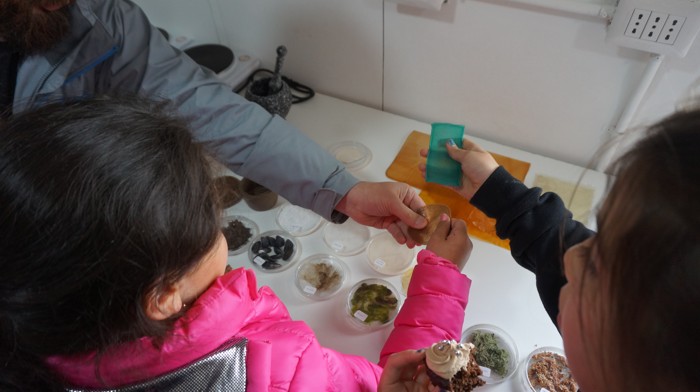

CHILEAN-ANTARCTIC
Prototype of a self-sufficient biofabrication pro- tocol for remote territories
Research expedition of Bio-Manufacturing practices in Patagonia and Puerto Williams in the context of the opening of the digital fabrication laboratory Fab Lab Austral
The general purpose of introducing an open-source methodology for the exploration of critical territories, either in areas of difficult access in terms of ecosystem conditions, is the first attempt to define standard parameters. Besides the essential purpose of the materials systematization, this is an informal and illustra- tive story of the activities that were carried out during this visit to highlight some of the facts that were meaningful during the visit
Powered by Equal Opportunities for Women of the Rhine-Waal University of Applied Sciences: ompu- tational design of the Massachusetts Institute of Te- chnology MIT
Thanks to FabLab austral, Pontificia Universidad Catolica de Chile, Fab-Foundation and laboratory of Bio-fabrication LABVA.

CONCEPT
The term ‘biofabrication’ will be used to refer to the cultural practices that surround these emergent technologies.
The present research focuses on developing a proposal for a small-scale self-sufficient biofabrication chain of production in remote territories. The case study in which the proposed protocol was applied took place in Puerto Williams, the southern most town in the planet.


B. COLLECTION OF SAMPLES
Definition of the biomass relevant to the fabrication process, planning and carrying out the expeditions and collecting raw materials (natural or anthropogenic).
C. SAMPLES PROCESSING
Extraction of the rele- vant compounds or preparation of the ingre- dients from natural or anthropogenic resources collected.
D. MATERIAL EXPERIMENTATION
Development and experimentation of the different mixes of fillers and binders. Design and testing of materials.
Content made on Kapwing
OBJECTS PRODUCTION
For the experimental approach, materials are classified using biomimicry principles regarding how biological composites perform. This involved the division of those that behave as binding agents because of gelifying properties under certain conditions while others are sorted for their structural performance and filler behavior. The material experimentation involved two case studies in simultaneous conditions. The first one is related to the viability of self-autonomy bio-fabrication in extreme con- ditions while the other explores the creation of a biocomposite based on collected samples.